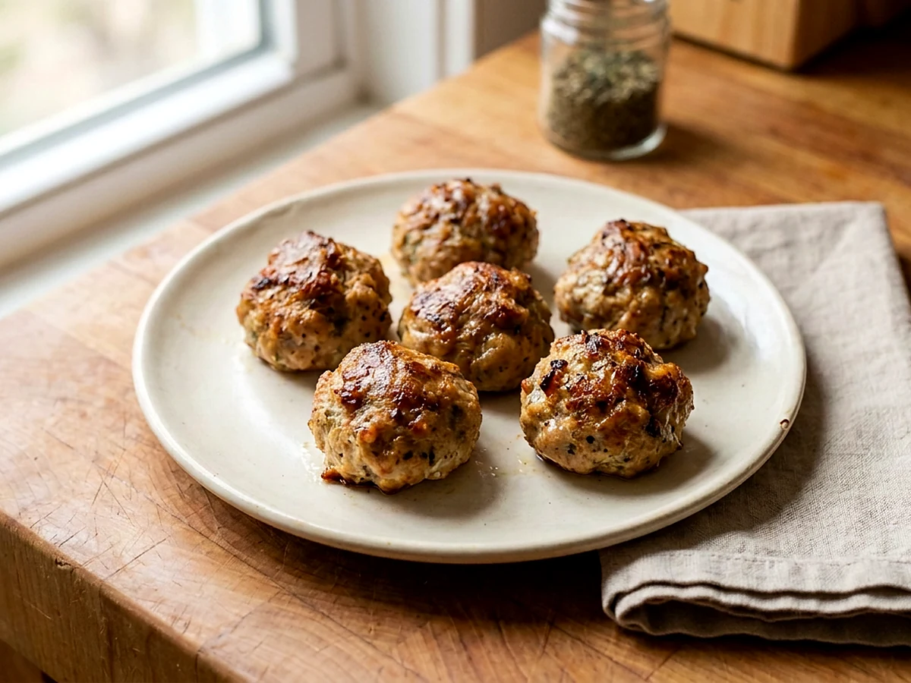

High-Protein Turkey Meatballsthat Stay Juicy
A simple milk-and-bread panade keeps these baked turkey meatballs tender instead of dry.

Watch the recipe
Cook it with Jadon.
Play the video here, then keep the measured ingredient list and full method open beside you while you cook.
Open on YouTube ↗Cook in this order
Method
- Put the torn bread in a bowl and cover it with the milk. Let it soak for 15 minutes.
- Heat the oven to 425°F and line a sheet pan with foil or parchment.
- Mash the soaked bread and milk with your hands until it becomes a thick paste. This is the panade that keeps the turkey moist.
- Add the ground turkey, eggs, garlic, salt, pepper, garlic powder, smoked paprika, and Italian seasoning. Mix only until evenly combined; do not overmix.
- Roll the mixture into 20–24 evenly sized meatballs and place them on the prepared sheet pan with space between each one.
- Bake for about 20 minutes, until browned and the centers reach 165°F. Rest for 5 minutes before serving.
Food-safety checkTurkey meatballs are safe at 165°F in the center. Use a thermometer on one of the largest meatballs.
Ready for the next one?
Browse every Jadon Cooks recipe and watch the matching video.
See all recipes